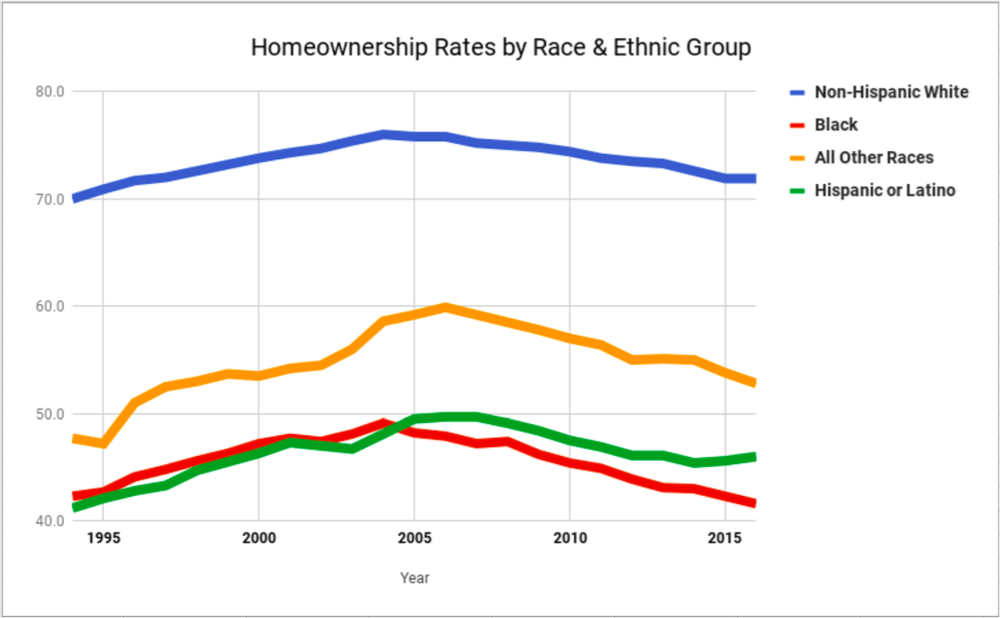

De Jure Segregation
Government;s Hand in Segregation
In the building of an integrated neighborhood in Milpitas California, when the local government was aware of lands that African Americans wanted to build on, they declared them parklands to prevent them from owning homes. Not only that, roads that lead to African American communities were made private and raised rates for utilities.
Local governments rerouted interstate highways to create boundaries or shift those that encamped African Americans neighborhoods. Equally as important, legislators also choose school sites to force families to live in segregated neighborhoods if they wanted to give their children an education.

Redlining
Neighborhoods with mostly black residents were redlined and lenders were five times more likely to give loans to white people rather than black people because of these redlined communities. For instance, Michael Lomax, a black Fulton County Commission chairman had to go to 3 banks before he could get a loan. In essence, loans were granted based on the borrower’s ethnicity rather than their income.
Map of Syracuse


Labeled as D5, Townsend Street was described as being infiltrated by Jewish and Negro families. There was a mix of nationalities in this area. The area was old and congested and in disrepair with some vandalism and it was undesirable both as to improvements and class of occupant. The house values also went down.